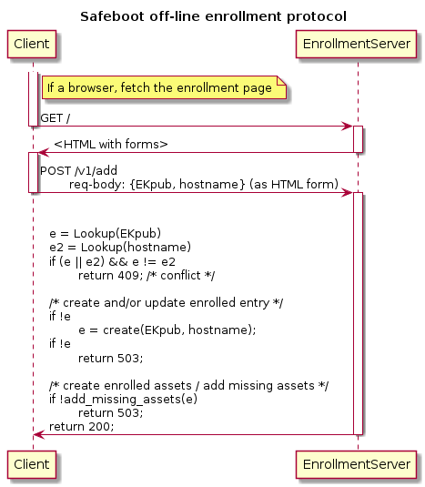
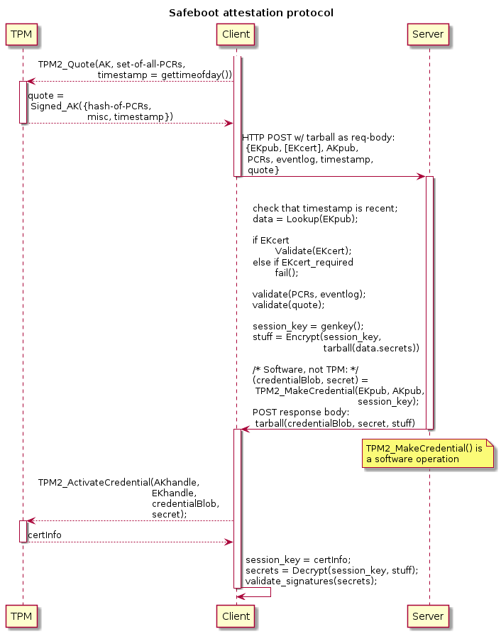

Safeboot.dev Enrollment, Attestation, and Proof-of-Possession Protocols
This document describes the Safeboot.dev enrollment and attestation protocols.
These protocols are based on the Trusted Computing Group's (TCG) Trusted Platform Module (TPM), using a discrete TPM or a firmware TPM to secure enrollment and delivery of secrets to enrolled devices. The use of a TPM helps provide decent assurance of device state at certain times, provides us with a way to bootstrap trust.
The Safeboot.dev enrollment protocol creates long-term state for an enrolled device, including secrets/credentials needed by the device. The Safeboot.dev attestation protocol conveys enrolled state to devices that demonstrate being in good state.
NOTE: The protocol is described as it will soon be. Specifically, the use of digital signatures for authentication of long-term enrolled assets is not yet integrated. See Pull Request #140.
Goals
- protocol specification sufficient for
- security review
Background
The security of the Safeboot.dev protocols depends critically on the use of TPMs. Reviewers must be familiar with some of the relevant TPM concepts listed below.
Some useful links:
Critical Background
It is essential that readers understand:
Readers should also have a passing understanding of how authorization works in a TPM 2.0 as well, especially when a TPM requires a caller to execute some authorization policy, and which policy.
Readers must be familiar with the TPM2_MakeCredential() /
TPM2_ActivateCredential() constructs. We describe these somewhat here.
TPM2_MakeCredential() is an operation that amounts to encryption of a small
secret to a public key, but with a binding to the cryptographic name of an
"activation object". TPM2_ActivateCredential() decrypts such ciphertexts
provided that:
- the caller has access to the private key to whose public key
TPM2_MakeCredential()encrypted the payload, - and that the caller has access to the "activation object" named by the
caller of
TPM2_MakeCredential().
As the cryptographic name of an object binds to it any authorization policies
associated with use of that object, the caller of TPM2_ActivateCredential()
must meet that policy.
This means that the caller of TPM2_MakeCredential() can require specific
authorization and other attributes -via the activation object's name- that the
caller of TPM2_ActivateCredential() must satisfy.
For example, a device that will call TPM2_ActivateCredential() can supply the
activation object's public key to the peer that will call
TPM2_MakeCredential(), then that peer can combine the activation object's
public key with the attributes expected of the activation object to cause the
protocol to succeed IFF the possessor of the activation object created it with
those same attributes.
NOTE: The activation object's private key is not itself used for any cryptographic operations in
TPM2_ActivateCredential(). Only the activation object's cryptographic name and its attributes are used.NOTE: The
TPM2_MakeCredential()function can be implemented entirely in software, as it requires no privileged access to any objects stored in any TPMs.NOTE: It is essential to the security of the Safeboot.dev protocols that enrolled devices' TPMs be legitimate TPMs or virtual TPMs run by trusted agents. This is due to the protocol depending on the TPM to enforce authorization policies for certain functions that an untrusted implementation could forgo.
Other TPM Background
Some less critical TPM background:
- Hash extension
- Platform Configuration Registers (PCRs)
- Root of Trust Measurement (RTM)
- Authorization
- Key hierarchies
Terminology
We will use a lot of terminology from the TCG universe.
In particular we will speak of:
- credential
Depending on the context, "credential" will refer either to:
a) a secret or private key and possibly some metadata which can be used to access some remote resources -- for example, a PKIX certificate and private key --,
b) a small secret key -typically an AES key- encrypted with
TPM2_MakeCredential().
- credential activation
The successful use of
TPM2_ActivateCredential()
to recover a small secret.
- activation object
A TPM entity whose cryptographic name is used in making a "credential" with
TPM2_MakeCredential(),
and a handle and authorization session to which will be provided by the
caller of
TPM2_ActivateCredential()
to recover the credential.
Use Cases: Secure Boot, Device Credential Provisioning
The Safeboot.dev enrollment and attestation protocols support two use cases:
- secure boot
- device credential provisioning
These two uses differ only in whether the enrolled device is expected to perform UEFI secure boot.
In all cases Safeboot.dev enrollment is about creating sensitive files/blobs/assets that are stored encrypted to the device's TPM and to escrow agents.
In all cases Safeboot.dev attestation is about delivering enrolled assets to devices in trusted state.
Use Cases: Secure Boot
This use-case involves the device encrypting local storage with a secret long-term key obtained at boot time via the attestation protocol.
Use Cases: Device Credential Provisioning
This use-case involves delivering to the device credentials such as:
- private keys and PKIX certificates for their public keys (for, e.g., TLS and/or IPsec)
- Kerberos keys ("keytabs")
- OpenSSH host keys and certificates
- service account tokens of various kinds
Use Cases: Secure Boot and Device Credential Provisioning
Naturally, both of these use cases can be combined. In fact, they are the same use case, differing only in the nature of the material delivered to the client.
Use Cases Currently Out of Scope
Other attestation protocols are meant to be used not just at boot time but very often, and not so much for delivering device credentials to the client device as for ascertaining the continued trusted state of the client device. Devices that fail to attest successfully and often enough might, e.g., be locked out of the network.
Such protocols may depend on having some dynamic state on the server side. For
example, keeping track of the last time that a client attested, its TPM's
resetCount (to make sure it never goes backward, and to detect reboots), etc.
Nothing about Safeboot.dev's protocols precludes the use of other attestation protocols for purposes other than the use cases listed above. Nothing about Safeboot.dev's current protocols precludes the addition to Safeboot.dev of functionality similar to those other projects' attestation protocols'.
Threat Model
The primary threats that the Safeboot.dev enrollment and attestation protocols seek to protect against are:
- theft of devices and/or their local storage
- passive attacks on the attestation protocol
- active attacks on the attestation protocol
- any attacks on the enrollment protocol
Assumptions
We assume that:
- enrollment and attestation servers are physically secure
- access to enrollment and attestation servers is secured
- the credentials held by enrollment and attestation servers are secure
- the enrollment database and any associated servers are secure
- read access to the enrollment database can be secured
- enrollment database protocols are secure
Threat Models Out of Scope
The following threats are out of scope for this document:
- any attacks on the attestation server (other than via attacks on the attestation protocol)
- any attacks on the enrollment database
- any attacks on the enrollment server (other than via attacks on the enrollment protocol)
- post-attestation attacks on devices
Architecture
The Safeboot.dev architecture consists of two separate protocols: one for enrollment, and one for attestation.
The Safeboot.dev attestation protocol operates using state created at enrollment time.
Enrollment is the act of creating state binding a device's TPM and a name for that device, as well as creating any secrets and/or metadata that that device may repeatedly need in the environment it will be used in.
The separation of enrollment and attestation is motivated by:
- privilege separation considerations
We'd like to isolate any issuer credentials to as few systems as possible, while allowing the attestation service to be widely replicated.
Because enrollment is a low-frequency event, while attestation a high-frequency event, we can have fewer enrollment servers and more attestation servers. Then we can isolate issuer credentials by placing them only on enrollment servers.
- database replication and write concurrency considerations
Having state created and manipulated only at enrollment servers allows us to replicate the enrollment database to attestation servers as a read-only database.
Together with the low frequency of enrollment events this frees us from having to address concurrent database updates at this time, at the cost of having primary/secondary enrollment server roles.
Any future evolution of Safeboot.dev towards more dynamic attestation state may well use separate databases for enrolled assets and attestation state. Our interest in privilege separation does not preclude such an evolution, as the separation between one database type and the other would tend to fulfill that interest.
Enrollment Protocol
The enrollment protocol cosists of an HTTP API called over HTTPS:
/v1/add--POSThere to enroll, as described above/v1/find--GEThere to query the enrolled device database byhostname/v1/query--GEThere to query the enrolled device database byEKhash/v1/delete--POSThere to delete an enrolled device's database entry
All of these end-points are 1 round trip, naturally (except where HTTP authentication methods used require more round trips).
The /v1/add and /v1/delete end-points expect an HTML form to be posted.

The /v1/find end-point expects a single query parameter to be given:
hostname, with a hostname prefix.
The /v1/query end-point expects a single query parameter to be given:
ekpubhash, with a hash of EKpub prefix.
The /v1/add end-point takes two inputs from the client, delivered as an HTML
form over an HTTPS POST:
hostname-- the desired device nameekpub-- the device's TPM's endorsement public key (EKpub), either inTPM2B_PUBLICorPEMformats (either as a public key or as a certificate)
An EK certificate is preferred, as that can be validated by checking that its
issuer chains to a trusted TPM vendor root certification authority (CA). In
environments such as the Google compute cloud's Shielded VMs, there may not be
an EK certificate available, but instead an API may be available to validate
an EKpub.
User authentication and authorization MAY be required if only certain users should be allowed to enroll devices. The choice of HTTP authentication method is not specified here (options include Negotiate, Bearer, OIDC, SCRAM, etc.).
The enrollment server ensures that the creation of the binding of device name
and EKpub is made atomically.
NOTE: In a putative future where multiple enrollment servers can concurrently create these bindings, we may dispense with atomic bindings; instead a conflict resolution mechanism MAY be used to resolve conflicts.
The enrollment server will also provision the device with any number of secrets and metadata of various kinds that will be transported to the device during attestation. These are stored encrypted at rest (more on this below).
No request or response headers are used. No universal resource identifier (URI) query-parts are used. The URI local-part need only denote that it is the enrollment end-point. We are using the following URI local-parts:
Types of Secrets and Metadata Provisioned
Various types of long-term secrets and metadata can be provisioned to an enrolled device:
- configuration
- early boot scripts
- symmetric keys (or passphrase) for local storage encryption
- private keys and PKIX certificates for them (client, server) for TLS, IPsec, etc.
- Kerberos keys ("keytab")
- service account tokens
- IPsec keys for manually keyed SAs
- etc.
IMPLEMENTATION NOTE: These are configurable as
genprogs for thesbin/attest-enrollprogram. See its usage message.
Data-at-Rest Encryption
All these secrets created by the /v1/add end-point are encrypted to the
device's TPM's EKpub and separately also encrypted to the public keys of
configured escrow agents for, e.g., break-glass recovery.
For every secret asset the server generates a random AES-256 key. The plaintext of the secret to be encrypted is then encrypted using the AES-256 key in an authenticated encryption cipher mode. See Appendix-A.
The AES-256 key is then encrypted to the enrolled device's EKpub and to any
configured escrow agents' public keys.
Encryption to Escrow Agents
Encryption to escrow agents is done using raw RSA public keys.
Encryption to Device EKpub
All these secrets are encrypted to the device's TPM's EKpub, each with an
optional, configurable TPM authorization policy. Two mechanisms can be used
for encryption to a device's TPM: the "WK" and "TK" mechanisms.
A TPM authorization policy is a TPM 2.0 enhanced authorization (EA) policy, and will be enforced by the device's TPM when called to decrypt one of these secrets.
The default policy for the rootfs key (a symmetric key for local storage
encryption) is that the platform configuration register (PCR) #11 must have the
initial value (all zeros), with the expecation that the attestation client will
immediately extend PCR #11 (with no particular value -- just some value) so
that the TPM will not again decrypt the same ciphertext unless the device
reboots.
Policies are configurable for each secret type.
NOTE: We could use well-known PCR#11 extension values for the purpose of creating specific time windows during the boot process during which different secrets could be decrypted.
NOTE: Both, the WK and TK methods offer equivalent functionality. We support both mainly for historical reasons. The WK method is simpler, but the TK method was implemented first.
Encryption to TPM EKpub: WK Method
NOTE: Readers are expected to understand the
TPM2_MakeCredential()andTPM2_ActivateCredential()functions. See the Critical Background section.
-
A well-known public key (
WK) is loaded into a software TPM usingTPM2_LoadExternal()with the desired policy'spolicyDigest. -
TPM2_MakeCredential()is called with these input parameters:- the
WKpub(the loaded WK) as theobjectNameinput parameter, - the device's
EKpubas thehandleinput parameter, - and the AES-256 symmetric key as the
credentialinput parameter (the plaintext).
- the
The outputs of TPM2_MakeCredential() (credentialBlob and secret) make up
the ciphertext of the AES-256 key encrypted to the TPM's EKpub.
The details of what TPM2_MakeCredential() does are described in the TCG TPM
2.0 Library part 1: Architecture, section 24 (Credential
Protection).
Decryption is done by calling TPM2_ActivateCredential() on the TPM that has
the EK corresponding to the EKpub. Critically, the TPM will refuse to
"activate" the credential (i.e., decrypt the ciphertext) unless the caller has
satisfied the WK's authPolicy (if set).
To decrypt, access to the TPM identified by the EKpub is needed. The process
is as follows:
- call
TPM2_LoadExternal()the well-known key, with the desiredauthPolicy, if any - call
TPM2_StartAuthSession()to create a policy session for theEK - call
TPM2_PolicySecret()to obtain access to theEK - call
TPM2_StartAuthSession()to create a policy session for theWK(if theWKhad apolicyDigestset) - call the policy commands on the
WKsession handle to satisfy its policy (if one was set) - call
TPM2_ActivateCredential()with the loadedWKas theactivateHandleand its corresponding policy session, theEKas thekeyHandleand its corresponding policy session, and the ciphertext (credentialBlobandsecret) as input parameters
The WK's authorization policy, if set, is enforced by
TPM2_ActivateCredential().
Then, once the AES-256 key is decrypted, the confounded AES-256-CBC-HMAC-SHA256 ciphertext is decrypted as described above.
Encryption to TPM EKpub: TK Method
- create an RSA key-pair in software
- encrypt the AES-256 key to the RSA public key using OEAP with any software
- use a software TPM to encrypt the RSA private key from (1) to the
EKpubof the target TPM usingTPM2_Duplicate(), setting the desired policy'spolicyDigestas the intendedauthPolicyof the RSA key as it will be when loaded by the target TPM - the ciphertext then consists of a) the ciphertext from encryption to the RSA
public key, b) the outputs of
TPM2_Duplicate()
To decrypt, access to the TPM identified by the EKpub is needed. The process
is as follows:
- call
TPM2_StartAuthSession()to create a policy session for theEK - call
TPM2_PolicySecret()to obtain access to theEK - call
TPM2_Import()andTPM2_Load()to import and load the output ofTPM2_Duplicate() - call
TPM2_StartAuthSession()to create a policy session for theTK(if theTKhad apolicyDigestset) - call the policy commands on the
WKsession handle to satisfy its policy (if one was set) - call
TPM2_RSA_Decrypt()to decrypt the AES-256 key with the importedTK
The TK's authorization policy, if set, is enforced by TPM2_RSA_Decrypt().
Then, once the AES-256 key is decrypted, the confounded AES-256-CBC-HMAC-SHA256 ciphertext is decrypted as described above.
Break-Glass Recovery
Break-glass recovery consists of:
- replacing a device's TPM or the device itself (including its TPM),
- decrypting the secret AES-256 keys stored in the enrollment DB using an escrow agent,
- encrypting those to the new TPM's
EKpub, - and replacing the corresponding ciphertexts in the enrolled device's entry in the enrollment DB.
Any break-glass recovery operations must be performed only by authorized users.
Attestation Protocol
The Safeboot.dev attestation protocol is a single round trip protocol that allows a device to obtain its enrolled assets from the attestation server in exchange for successfully attesting to the device's state.

State that can be attested:
- recency -- via a timestamp
- that the caller has access to the
EK - the values of PCRs, which reflect the firmware ROMs and operating system loaded
- the TPM's
resetCount(count of reboots) - anything that can be required by a TPM policy
To attest its state, a client device first generates an "attestation key"
(AK) -- an asymmetric signing keypair. This object must have the stClear
attribute set, which means that the TPM will refuse to reload or re-create this
AK if the TPM is reset (which happens when the host device reboots). It must
also have the fixedTPM, fixedParent, and sign attributes set. Then the
client creates a "quote" of all the PCRs, signed with the AK. See
TPM2_Quote().
The attestation protocol consists of an HTTP POST (HTTPS not required) with:
/v1/attestas the end-point- no particular request headers
- no URI query-parameters
- no HTTP authentication needed
-
the request body consisting of an uncompressed
tarfile containing the following items:-
ek.crt-- theEKcert, that is, the PKIX certificate for the TPM's endorsment key (EK) as provisioned by the TPM's vendor (this is optional, present only if the TPM has anEKcert) -
ek.pub-- theEKpubinTPM2B_PUBLICformat -
ak.pub-- theTPM2B_PUBLICrepresentation of theAK -
ak.ctx-- theAKobject, saved to help make it easier for the client to keep state -
quote.out,quote.sig, andquote.pcr-- the outputs ofTPM2_Quote() -
using the
AK -
nonce-- not actually a nonce but a timestamp as seconds since the Unix epoch -
eventlog-- if possible, this is the TPM PCR eventlog kept by the UEFI BIOS -
ima-- if possible, this is the Linux IMA log
-
The attestation server then:
- looks up the device's enrollment DB entry by the given
EKpub - examines the
ak.pubto ensure that it has the desired attributes (specifically:signfixedTPMfixedParentstClearand recomputes theAK's cryptographic name for later use as the activation object name request parameter ofTPM2_MakeCredential()
- verifies that the eventlog matches the PCRs
- verifies that the digests that appear in the eventlog are acceptable, or that the PCRs match "golden PCRs"
- examines the
nonceto verify that it is a recent timestamp
If all the validation steps succeed, then the attestation server:
- generates an ephemeral AES-256 session key,
- constructs a tarball of the device's long-term enrolled assets from the device's enrollment database entry,
- encrypts that tarball in the session key,
- encrypts the session key to the device's TPM's
EKpubusingTPM2_MakeCredential()with theAKpub's cryptographic name as theobjectNameand theEKpubas thehandle
In the successful case, then, the response body is a tarball consisting of:
credential.bin-- a file containing thecredentialBlobandsecretoutput parameters of theTPM2_MakeCredential()callcipher.bin-- the ciphertext of a tarball of the device's enrollment DB entry, encrypted with the AES-256 session key using confounded AES-256-CBC-HMAC-SHA-256 as described above.ak.ctx(as provided by the client, sent back)
The client can decrypt and recover the AES-256 session key IFF it has a TPM
with the corresponding EK and AK loaded.
Having recovered the AES-256 session key, the client can decrypt the tarball of the client's long-term secrets and metadata, where the secrets are encrypted to the client's TPM using the WK or TK methods. The client can then decrypt the secrets whose policies it can satisfy.
The client is expected to immediately extend PCR #11 so that long-term secrets whose policies expect PCR #11 to be in its initial state (all zeros) cannot again be decrypted with the client's TPM without first rebooting.
Note that we use the server uses
TPM2_MakeCredential()to construct the response, much like the "WK method" of encrypting secrets, with these differences:
- the client's ephemeral
AKpubis used to construct theobjectNameinput parameter,(This means that if the client reboots it will not be able to decrypt this response with
TPM2_ActivateCredential()because theAKhadstClearset, which means it cannot be recovered if the TPM is reset.)
the
objectNamedoes not involve apolicyDigestthe ciphertext is not a long-term stable ciphertext but one made with an ephemeral AES-256 session key.
Authentication of Enrolled Assets
All enrolled assets are signed by a private key on the enrollment server at the time that the assets are created.
Attestation clients validate these signatures after successful attestation and conveyance of enrolled assets to the attestation client.
Signatures can be made with a bare key, or they can be made with a certified key. In the former case the attestation client must know the public key to validate the signatures with. In the latter case the attestation client must know a PKIX trust anchor for validating the enrollment server's certificate and certificate chain.
Proof-of-Possession Protocol
TBD (not yet designed or implemented).
Attestation clients cannot recover their secrets unless they are in the
attested state, or unless they ran untrusted code and locally saved their
enrolled assets from a previous attestation. The attestation server currently
receives no confirmation of that state after the fact, but knows that the
client can recover its secrets IFF its attestation is correct because the
client's TPM will enforce the binding between the client's EK and AK, and
any policies needed to decrypt the client's enrolled assets.
We are considering chaining instances of the attestation protocol where each instance proves activation of the preceding instance's credential. Thus the proof-of-posession (PoP) protocol would be the same as the attestation protocol.
We might also use attestation chaining in this way to implement continuous (frequent) attestation. We can then keep some mutable per-device state, mainly the
resetCount, time of last good attestation, and a sequence number of the last good attestation.
Use Cases for PoP Protocols
-
logging and alerting
-
unlocking attested device access to a wider network
-
locking out of the network devices that fail to attest frequently
Enrollment Database
NOTE: Nothing here formally specifies a schema for this database. This content is supplied only to help reviewers.
The enrollment server creates state that is shared with attestation servers. Attestation servers need only read access to that state. We shall call that state a "database". Many options exist for representing the enrolled device database:
- relational (e.g., any SQL server)
- any NoSQL
- a filesystem
- a Git repository (basically a filesystem)
Each enrolled asset, with all its encryptions and signatures, can be a BLOB
value in a SQL table's column, or a file in a filesystem, or base64-encoded as
a field in a JSON/YAML/etc file, or any similar concept.
These blobs must be named, since the tarball sent to the client requires names for them.
NOTE: Currently the
sbin/attest-enrollprogram uses the filesystem to access the enrollment DB.Configurable hooks allow a site to convert the filesystem representation to other representations. One upcoming use will be to use a
CHECKOUThook to fetch a client's current entry from the DB and aCOMMIThook to commit a client's new current entry in the DB, using a Git repository to encode the client's entry as left on the filesystem bysbin/attest-enroll.
Enrollment Database Contents
Every enrolled device is identified by the SHA-256 digest of its EKpub (in
TPM2B_PUBLIC format). This is also the cryptographic name of the device's
TPM's EKpub.
NOTE: In our current implementation this digest is part of the path to the enrolled device's filesystem-based database entry:
$DBDIR/${ekhash:0:2}/${ekhash}/
Every enrolled device's enrolled state consists for the following named blobs. The blobs' names denote the expected type of their contents.
Blobs:
manifest
(metadata) A textual (ASCII), newline-separated list of enrolled assets' blob names.
manifest.sig
(metadata) A digital signature of the manifest.
ek.pub
The enrolled device's EKpub, in TPM2B_PUBLIC format.
hostname
(metadata) The enrolled device's fully-qualified hostname.
-
For each non-secret metadata:
${name}
A blob containing some metadata of type identified by its name.
${name}.sig
This is a digital signature the contents of the
${name}blob. -
For each type of secret:
${secret_name}.enc
This is the secret itself, symmetrically encrypted in confounded AES-256-CBC-HMAC-SHA-256, with a unique symmetric key (see item below).
${secret_name}.enc.sig
This is a signature of the ciphertext of the symmetrically encrypted secret.
${secret_name}.symkeyenc
This is the AES-256 key used to encrypt the the previous item, itself encrypted to the device's TPM's
EKpub. (In this case using the "WK" method.)${secret_name}.policy
Identifies (as a
policyDigestvalue, hex-encoded in ASCII) or defines a policy used to encrypt the previous item (${secret_name}.symkeyenc).NOTE: A policy definition language will be documented in an appendix later.
escrow-${escrow_agent_names[0]}.symkeyencescrow-${escrow_agent_names[1]}.symkeyenc- ..
escrow-${escrow_agent_names[$n]}.symkeyenc
These are the
${secret_name}.symkey, each encrypted to the corresponding escrow agents, if any such are defined.
The names and types of secrets need not be specified here, but currently we have support for the following:
rootfs.key(a symmetric key(s) for local storage encryption)cert-priv.pem(a private key to a public key digital signature cryptosystem)keytab(a file containing one or more Kerberos "key table" entries with keys for the device'shostservice principals)
The names and types of non-secret data blobs need not be specified here, but currently we have support for the following:
Metadata types:
anchor.pem(a trust anchor for the enrollment server's signing key)signer.pem(the enrollment server's public signing key)chain.pem(the enrollment server's signing key's PKIX certificate chain)hostname(see above)cert.pem(a certificate forcert-key.pemnaminghostname)
Metadata files are also signed, thus if there is a something there will be a
something.sig. Except that anchor.pem, signer.pem, and chain.pem are
not signed, as there is no point to signing them.
NOTE: The
anchor.pem,signer.pem, andchain.pemare sent back to the attestation client, if present in the client's enrolled device entry, but the attestation client is expected to know the anchor.pemorsigner.pem` a priori. Including these allows for key rotation and trust-on-first-use (TOFU) semantics on the attestation client side. The Safeboot.dev attestation client does not implement TOFU semantics.
Site-local Customization
Things that may vary locally:
- enrollment service base URI
Naturally, different users of Safeboot.dev may have different enrollment service URIs, which may even vary by datacenter, by rack, by client OS, etc.
- attestation service URIs
Ditto.
-
enrolled assets
-
enrolled device database and schema
-
EKpubvalidation -
TPM vendor root CAs configured for
EKcertvalidation
Implementation Considerations
The entire client side of the Safeboot.dev attestation protocol is implemented in Bash using native command-line tools to interact with the TPM and to perform software cryptographic operations, such as tpm2-tools and OpenSSL.
The reason for the client side being implemented mostly in Bash is that we intend to use PXE booting, and we need the Linux initramfs image to be small. Using Bash and standard command-line tools (typically coded in C) allows the Linux initramfs image that must contain them to be small. In particular, using Bash consumes much less space than any scripting language such as Python.
Most of the server side of enrollment and attestation is also implemented in Bash, with some parts in Python.
An alternative would be to code the entire stack in Rust.
Security Considerations
As with all TPM-based attestation protocols, the security of the protocols depends critically on the device's TPM being a legitimate, trusted TPM. A TPM can be implemented in software, but then it can only be trusted if it is implemented by a trusted implementor, and run in a trusted hypervisor, and used by a guest of the hypervisor. Otherwise we expect the use of discrete, hardware TPMs, or perhaps firmware TPMs in some cases.
The attestation server response is not authenticated. This means that any
on-path attacker or any attacker that can redirect the client's communications
with the server, can impersonate an attestation server and feed the client
arbitrary secrets and metadata, but only if the attacker knows the client's
EKpub. Since the client always tells the server it's EKpub, any attacker
can impersonate the attestation server.
Because all the enrolled assets are signed, all the enrolled assets are sent to the client, and a manifest of them is signed and sent to the client, no attacker can impersonate the attestation server without having access to the client's enrolled assets.
An attacker that can impersonate the attestation server can furnish the enrolled assets to a client that is in an untrusted state.
Therefore we consider the enrolled asset database to be read-sensitive. Only enrollment servers and attestation servers should be able to read it.
Separation of enrollment and attestation server roles is not required, but
enables privilege separation such that attestation servers need only read from
the database, while enrollment servers need only write (for /v1/add and
/v1/delete) and also read (for /v1/query and /v1/find).
An attacker that can write to the enrollment database can also substitute its own assets, but only if it can sign them as a legitimate enrollment server would.
Strict authorization of access to the enrollment server's signing credential is REQUIRED.
The enrollment server can implement TOFU enrollment or authenticated and
authorized enrollment. In the case of TOFU enrollment, binding of device
EKpub and device name must be atomic. In the case of authenticated and
authorized enrollment, the enrollment server MUST authenticate the user
enrolling a device, and it MUST check if the user is authorized to do so (and
possibly it must check if the user is authorized to create devices with names
like the proposed name).
We use a single round trip attestation protocol because, if the enrolled device
EKpub is really for a TPM (and this MUST have been validated), then the
semantics of TPM2_ActivateCredential() and the AKpub attribute validation
done by the attestation server, together serve to provide us with all the
guarantees we need that the PCR quote was legitimate.
A proof-of-possession protocol is strictly optional, but it can help provide alerting.
Analysis
An attacker may not impersonate an attestation server without having read
access to the database of enrolled assets. If we add use of
TPM2_PolicySigned() then an attacker may not impersonate an attestation
server without having read access to the database of enrolled assets and
having access to the attestation server's signing credential.
Digital signatures on the manifest of enrolled assets prevent attackers able to impersonate attestation servers from being able to add or remove enrolled assets.
Digital signatures on enrolled assets prevent attackers able to impersonate attestation servers from being able to modify enrolled assets.
Use of HTTPS (TLS) prevents impersonation of enrollment servers.
Attestation of trusted state (PCRs) coupled with tight read access controls on the enrollment database prevent attackers who gain control of an attestation client from recovering the client's enrolled long-term secrets' plaintext: the attacker would have to compromise the client in such a way that the quoted PCRs do not reveal the fact of the client's compromise to the attestation service.
However, it is essential that the attestation client have a locally configured trust anchor for validating the digital signatures on its enrolled assets.
Replays of attestation client requests will be rejected if the nonce
(really, timestamp) is too old. Otherwise they will be accepted, but attacker
gets nothing from the response unless they have access to the client's TPM's
EKpub and the AK that was used by the client.
Replays of previous attestation service responses will not be accepted by the
client since they will be bound to attestation keys no longer available on the
client's TPM (because each AK used in attestation has the stClear
attribute, so it will not be usable across reboots).
If an attestation client performs attestation multiple times between reboots,
then earlier responses can be replayed if the client depends on the server
returning the client's ak.ctx file to it. However, since the contents
returned to the client are static, there is no value to this replay attack.
Alterations of attestation service responses by MITMs will be detected due to the use of authenticated symmetric encryption (via confounded AES-256-CBC-HMAC-SHA-256).
Attackers who do not have access to an attestation client's TPM's EK cannot
decrypt the attestation response.
Impersonation of attestation services by attackers who can read the attestation database will be detected IFF the attacker removes, replaces, or adds enrolled assets and the attacker has not compromised the enrollment server's digital signing key or its PKI.
A client that saves its enrolled assets in local storage can skip attestation going forward. As the intent is that clients attest at boot time, this is a problem. One can deal with this problem by ensuring that clients run only trusted code that wouldn't do that.
NOTE: It may be desirable to develop an attestation protocol for frequent attestation. Such a protocol wouldn't deliver enrolled assets to the client, ensuring only that the client continues to be in a trusted state. Such a protocol is out of scope for this document at this time.
Possible Improvements
- @osresearch proposes that we can use a policy to make sure that enrolled assets delivered to an attestation client cannot be decrypted unless the client attested to trusted state.
We could do this using TPM2_PolicySigned() with a public key whose private
key the attestation server possesses.
The attestation client would then not be able to decrypt any of its enrolled
encrypted assets without first getting a signature from the attestation
server, which signature the attestation server would not provide unless it
were happy with the client's attested state. The signature would be part of
the response payload wrapper in a TPM2_MakeCredential() bound to the
client's AK that has stClear.
A key benefit of this approach is that the enrolled assets database would no longer be read-sensitive.
- We can get a stronger guarantee that the client's attested state is not
spoofed by attaching a policy to the client's
AKthat binds the attested state, though this is racy (since the attested state can change during the attestation process, though in early boot it wouldn't). A client could avoid the race by starting and satisfying a corresponding policy session before engaging in the attestation protocol.
With the current protocol the binding of attested state to the client's
ability to "activate" the attestation server's response is only this: that
the client must have access to the AK it used and that that AK must have
fixedTPM | fixedParent | stClear | sign as its attributes.
Associating a policy with the AK that uses TPM2_PolicyPCR() and
TPM2_PolicyCounterTimer() to bind all the attested state would leave just
one item unbound: the nonce (really, timestamp). We could use the nonce
as a password to satisfy an authValue, using TPM2_PolicySecret(). Thus
we could get a much stronger binding of the attested state to the client's
ability to activat the attestation response.
That said, the current, weaker, binding that we have in the protocol seems sufficient for our current purposes.
- Consider having attestation update some state on the server side for
detection of
resetCountgoing backwards (replay detection), and replay detection more generally when we start performing proof-of-possession and frequent re-attestation.
Because we prize availability, we may use an eventually-consistent method of sharing mutable attestation state on the server side.
Securing Communications with TPMs
Depending on the threat model it is essential to use encryption sessions to
encrypt sensitive command/response parameters, and to authenticate all commands
and responses. Authentication of communications with a TPM depends on the
application knowing the TPM's EKpub.
Sadly, it is not commonly the case that a computer's BIOS knows the computer's
TPM's EKpub from factory. As a result, it is possible for invasive, physical
MITM attacks on TPMs. Once a device's TPM's EKpub is enrolled, any MITM has
to be in the middle every time the attestation client runs. Therefore the MITM
has to have been in the middle from the moment the device is enrolled.
Configuring Trust Anchors
Attestation clients configured to use secure boot can find a locally configured
trust anchor on local storage after successful decryption with a rootfs key.
The rootfs key can be decrypted without authenticating its signature because
if it can decrypt the local filesystem then the rootfs key must not have been
altered by any attacker.
Attestation clients that are not configured to use secure boot can find a locally configured trust anchor on local storage, or in a TPM "non-volatile (NV) index" (in the case of a TPM NV index, probably only a hash of the trust anchor would be stored in the NV index).
In any case, authentication key rotation would be difficult. Indirection via intermediate keys (PKI-style) would help.
EKpub Validation
We rely utterly on TPMs enforcing extended policies. This means that we must
know that some EKpub is indeed a TPM's EKpub.
External EKpub Validation (Google Compute Environment)
In the Google Compute Environment the Google Shielded VM product allows us to
lookup a device by name and obtain its EKpub in PEM format.
If authorized users of the enrollment service can be trusted to fetch the
EKpub from the Google Shielded VM API, then the enrollment server need not
validate the EKpub at all -- the attestation server can just trust the given
EKpub.
EKpub Validation using EK Certificates
When enrolling bare-metal hardware, as opposed to Google Shielded VMs, we must
either extract the to-be-enrolled device's TPM's EKpub manually, and once
more trust and allow only authorized users of the enrollment service to enroll
those, or we must extract the to-be-enrolled device's TPM's EKcert and enroll
that so that the enrollment server may validate the client's EKcert is issued
by a trusted TPM vendor.
XXX We have yet to implement this.
Alternatives to EKpubs
Any primary key object with the fixedTPM, fixedParent, and decrypt
attributes set is suitable as an substitute for the EKpub provided that the
process of calling TPM2_CreatePrimary() and reading its public key is secured
by using the EKpub, and that the legitimacy of the TPM is established.
Wherever we refer to an EKpub in this document, one may substitute such an
alternative key.
Appendix A: Symmetric AEAD Cipher Mode: Confounded AES-256-CBC-HMAC-SHA-256
For bulk encryption we use AES-256 with an authenticated encryption with additional data (AEAD) cipher mode.
Given our implementation constraints we ended up using a cipher mode based on the well-understood Kerberos cryptosystem specified in RFCs 3962 and 8009. Kerberos uses AES with the CipherText Stealing (CTS) cipher mode, confounded, and with an HMAC with a SHA family digest. CTS is a variation of Cipher Block Chaining mode (CBC).
The differences between our confounded AES-256-CBC-HMAC-SHA-256 and the Kerberos cipher modes are:
- we use CBC instead of CTS
- we use SHA-256 with AES-256
- we don't truncate the HMAC
NOTE: Well, we could use SHA-384 with AES-256 for the HMAC, but then again, we're not truncating the HMAC.
NOTE: "Confounding" consists of prepending to the plaintext a cipherblock's worth (16 bytes) of randomly generated bits. This causes the ciphertext resulting from the encryption of the "confounder" to function as the actual, non-zero IV for the plaintext. Confounded CBC is indistinguishable from CBC with explicit IV, except that it costs one more cipher block operation, so it is slightly slower.
NOTE: CTS is a variation of CBC that does not require padding. It does not work for plaintexts shorter than a cipher block (16 bytes), but since confounding means prefixing a cipher block's worth of nonce to the plaintext, confounded CTS always expands the plaintext by just one cipher block's worth, and does not require padding. Therefore a plaintext that is 30 bytes will yield a ciphertext that is 46 bytes (+ 32 more bytes for the HMAC), a 31 byte plaintext will yield a 47 byte ciphertext, etc. Replacing CTS with CBC does not enable any further cryptanalysis since, after all, CTS applied to plaintexts of length divisible by the cipher's block size is equivalent to CBC.
NOTE: When we switch to using OpenSSL 3.0 we will be able to use CTS instead of CBC.
NOTE: The primary reason for using this construction is that it is easily implemented in Bash with OpenSSL 1.x tooling, and OpenSSL 1.x tooling does not provide authenticated encryption constructions in its command-line tools that are suitable for encrypting data at rest.
To encrypt a secret the enrollment server:
- creates a random AES-256 key
- uses confounded AES-256-CBC-HMAC-SHA-256:
a. uses AES-256 in cipher block chaining (CBC) mode with
- all-zero IV
- confounding (a cipherblock's worth of entropy prepended to the plaintext)
- padding b. appends an HMAC-SHA-256 digest of the resulting ciphertext
The padding is per-OpenSSL (if the plaintext is a whole multiple of 16 bytes then 16 bytes of zeros are added, else as many bytes are appended to bring the plaintext size to a whole multiple of 16 bytes, with the last byte set to the count of padding bytes).
The resulting ciphertexts are stored as-is in the enrollment DB.
The per-secret AES-256 keys are encrypted to the device's TPM's EKpub, and to the escrow agents.
Decryption of confounded AES-256-CBC-HMAC-SHA-256 ciphertexts is as follows:
- compute the HMAC-SHA-256 MAC of the ciphertext (excluding the MAC in the ciphertext)
- constant-time compare the computed MAC to the MAC in the ciphertext
- if these do not match, fail
- decrypt the ciphertext (excluding the MAC) with AES-256 in CBC mode
- discard the first block of the resulting plaintext (the confounder)
- examine the last byte of the plaintext and drop the indicated amount of padding